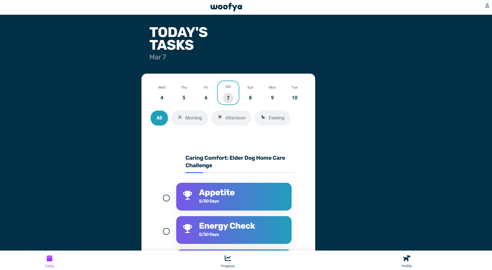
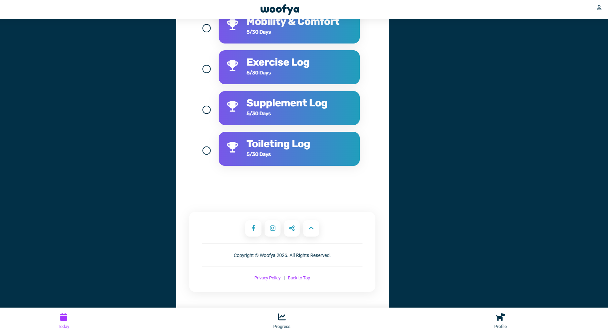
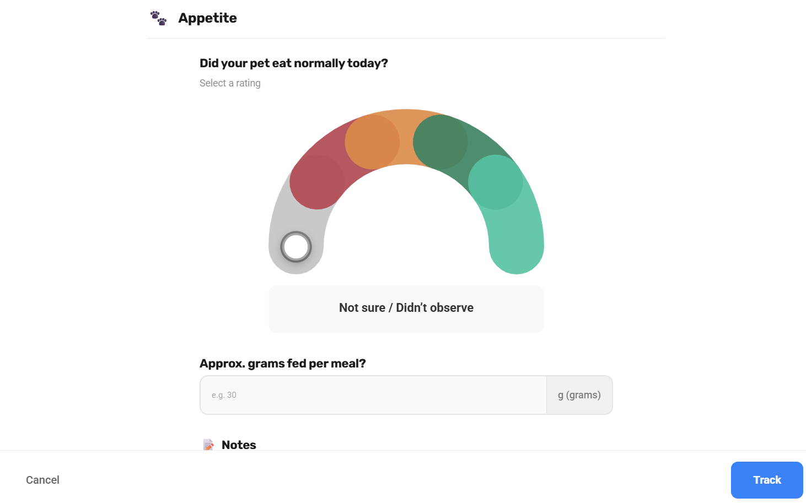
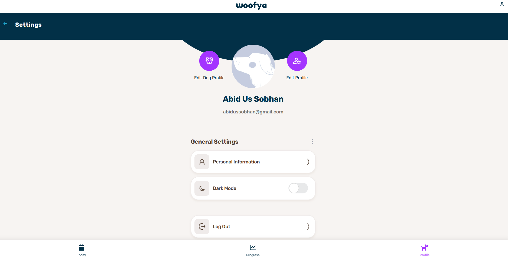

A front-end concept showing a clearer recovery dashboard with progress visibility, task prioritisation, and simple health trends for pet owners.

Name: Max
Age: 12 years
Care Plan: Elder Dog Home Care
Status: Active
This section gives the pet owner a clearer sense of how far they are through the recovery journey.
A simpler task layout with status and priority.
Logged successfully with notes.
Track energy level and daily behaviour.
Track comfort, movement and stiffness.
Capture additional health observations.
A lightweight visual summary for pet owners and vets.
Generally stable over the last 7 days.
Gradual improvement across the week.
6-day logging streak
These screenshots were used as visual references while thinking about layout improvements.

Good task focus, but limited progress visibility.

Interactive and useful, but could feel more guided.

Clear structure, but some actions appear inactive.
High-level product ideas based on the explored flow.
Show care plan completion status more clearly.
Surface appetite, mobility and energy changes over time.
Ensure profile actions and logout behave consistently.
Use streaks or badges to encourage daily logging.